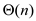
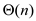
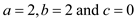

There is a difference between deterministic algorithms and randomized algorithms in calculating running time. A deterministic algorithm may have best, worst and average case running times. But a randomized algorithm only have expected (or average case) running time.
• When a deterministic algorithm runs multiple times with the same input, the running time is same in all executions. Because the running time of a deterministic algorithm depends on the input provided.
• Unlike deterministic algorithms, a randomized algorithm makes random choices while running. Thus when the random algorithm is run multiple times with the same input, the number of steps executed on each execution may vary.
• Therefore the running time of a random algorithm does not depend on input, but on random choices that the algorithm made.
• Thus, regarding randomized algorithms, there is no case of best case inputs and worst case inputs. But, the random algorithm may choose any one of all possible permutations of the input equally likely.
• Thus, all running times for all possible permutations of input are considered for running time calculation. This is equal to average-case running time calculation.
Hence, for a randomized algorithm, only the expected (or average-case) running time is calculated.
In case of average case behavior of the quicksort algorithm, the analysis is done with the assumption that the partitioning is completely random because every permutation of the input numbers is equally likely.
However, in practice, the partitioning isn’t as random as expected. So, in order to obtain the expected performance, randomization can be incorporated. In order to do this, replace the call to PARTITION procedure with a call to the RANDOMIZED-PARTITION procedure. The RANDOMIZED-PARTITION is turn calls the RANDOM procedure.
So, the call to the RANDOM procedure is done once each time a call to the RANDOMIZED-PARTITION is made. Therefore, the number of calls to procedure RANDOM is same as the number of calls to the RANDOMIZED-PARTITION procedure. So, consider the number of RANDOMIZED-PARTITION calls to determine the total number of calls to the procedure, RANDOM.
Assumption made for this instance of the problem: It is assumed that the elements are all distinct from each other. If they are not distinct and all are same, then no call to the RANDOM procedure is needed at all. And thus, it defeats the purpose of finding the number of calls needed for best case scenario.
The total size of the input list is .
.
Worst Case: The worst case in case of quicksort occur
when the partition returns a sub-list of size 0 and another
sub-list of size .
.
The partitioning itself takes care of one element which becomes the pivot element.
Then the RANDOMIZED-QUICKSORT is called recursively on both these lists independently.
So, the following recurrence relation determines the number of calls made to the RADOM procedure (which is inside the RANDOMIZED-PARTITION procedure):
To do this partition, one pivot element is chosen using the RANDOMIZED-PARTITION procedure. This process takes care of one element. This is just one call done in constant time.
 = 0 because
on a sub-list that is of size = 0, RANDOMIZED-QUICKSORT is not
called recursively.
= 0 because
on a sub-list that is of size = 0, RANDOMIZED-QUICKSORT is not
called recursively.
So, the recurrence relation becomes the following:
The following observations are made on the above recurrence relation:
• The initial size of the problem is n.
• The size of the problem decreases by 1 each time.
• Constant cost  is required
for division of the problem at each stage.
is required
for division of the problem at each stage.
Thus, to completely eliminate the problem, the problem needs to
be subdivided n times. And each time incurs. Therefore,
in worst case,  .
.
Hence, the number of calls made to the random number
generator RANDOM in the worst case in terms of  -
notation is 
.
-
notation is 
.
Best Case: The best case in case of quicksort occur when the partition returns two sub-lists, each of size at most.
If is odd then
the size of the sub problems are.
If is even
then the size of the sub problems are and .
.
The partitioning itself takes care of one element which becomes the pivot element.
Then the RANDOMIZED-QUICKSORT is called recursively on both these lists independently.
So, the following recurrence relation determines the number of calls made to the RADOM procedure (which is inside the RANDOMIZED-PARTITION procedure):
The above recurrence relation can be solved using the Master Theorem.
The Master theorem states the following:
If the recurrence relation is of the form, then the asymptotic solution of the recurrence relation is the following:
The recurrence relation is
So, 
Since,
Therefore,
Hence, the number of calls made to the random number
generator RANDOM in the best case in terms of -
notation is
.